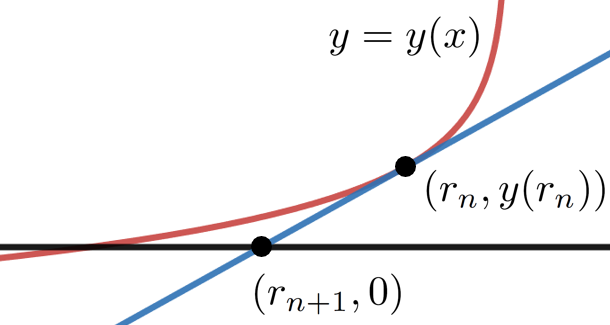
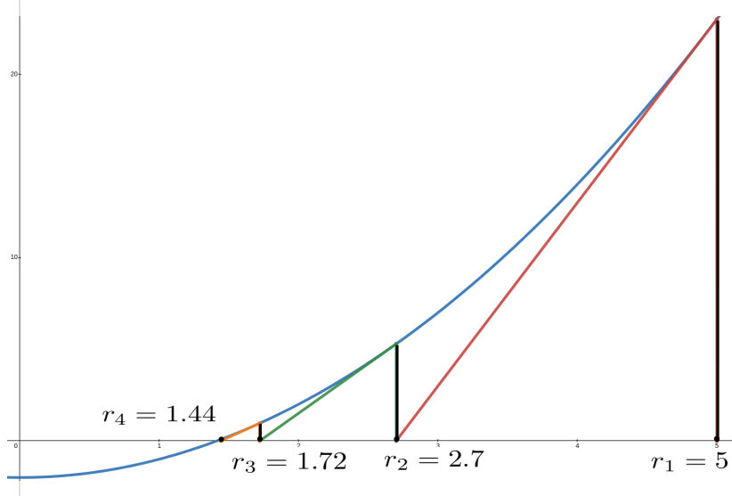
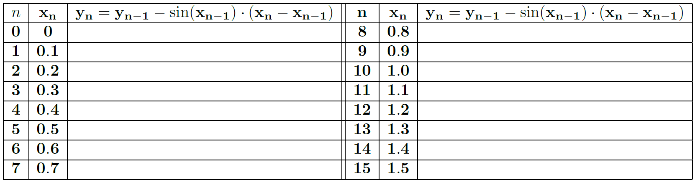
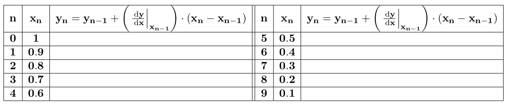

Although this may seem a paradox, all exact science is dominated by the idea of approximation. When a man tells you that he knows the exact truth about anything, you are safe in inferring that he is an inexact man. Every careful measurement in science is always given with the probable error .\ .\ . every observer admits that he is likely wrong, and knows about how much wrong he is likely to be.
I think that it is a relatively good approximation to truth—which is much too complicated to allow anything but approximations—that mathematical ideas originate in empirics.
In a world where you can take your phone out of your pocket, ask it for the square root of two (\(\approx 1.4142135624\)) or the fifth root of seven (\(\approx 1.47577316159\)), and instantly obtain those numbers accurate to eleven decimal places it is difficult to convey the profound importance of having good methods of approximation. There appears to be no need for approximations.
But stop and think about this for a moment. Both \(\sqrt{2}\) and \(\sqrt[5]{7}\) are irrational numbers so neither can be completely represented by a terminating decimal. That is, the decimal form of both numbers is infinitely long. So if all we have is a value accurate to only eleven decimal places what we really have is an approximation, right? It’s not even a particularly good approximation in the sense that most of the information we need to completely specify \(\sqrt{2}\) or \(\sqrt[5]{7}\) in decimal form is missing.
The fact is that the modern world could not exist without good approximation methods because very little of the information necessary to functioning in the modern world can be computed precisely. Moreover in those cases where it can be computed precisely the exact number is often less useful than the approximation. For example, if you are driving to Cincinnati your GPS will tell you that you are \(2\) hours and \(25\) minutes away, not \(145.22434554656546456\) minutes away, even if the latter number is exactly correct.
Based on the audio signal your phone receives it constantly approximates what signal to send to the speaker for you to hear. Because processing an audio signal is such a ubiquitous problem, many very sophisticated approximation techniques have been developed and they are used all of the time. We don’t see them because they are usually embedded in software on our many electronic devices. Because they are so accurate, we tend not to see them as approximations.
Every scientific, engineering, or financial computation involves approximations because it is almost always impossible to get perfect information. We must approximate and we do it all of the time. Well, actually most of the time our technology does it for us. But our technology is simply the realization of ideas that begin with paper, pencil, and thought\aside{Ok, paper and pencil are not strictly necessary either because more modern technology is rapidly replacing even that. But the need for thought and a way to record our thoughts will never change.}. Without these no new technology is possible.
After the invention of Calculus — and especially in the twentieth century — the number of very good approximation techniques ballooned. We will look, very briefly, at two pre-Calculus methods of approximation. Then we will consider two early approximation methods that came from Calculus, Newton’s Method and Euler’s Method.
Section7.1Root Finding: Two Pre-Calculus Approaches
Subsection7.1.1The Bisection Method
The Bisection Method is what nearly everyone would think of first when faced with an approximation problem. It sounds very complicated when written out in words and symbols, as we’re about to do, but it is really quite simple. It will help if you do the computations along with us, rather than just reading them.
Example7.1.
For the sake of having a definite problem to work with suppose we want to compute a decimal approximation to \(\sqrt{2}\text{.}\) The Bisection Method works like this: First pick two numbers, one less than \(\sqrt{2}\text{,}\) and one greater than \(\sqrt{2}\text{,}\) In this example we’ll choose \(1\) and \(2\text{.}\)
Next, we take the midpoint of the interval \([1,2]\) as our first approximation to \(\sqrt{2}.\) The midpoint is the average of the endpoints so in this example \(r_1 =
\frac{1+2}{2}=\frac{3}{2}\text{.}\) Since \(\sqrt{2}\) and \(\frac32\) are both in the bracketing interval \([1,2]\) we see that the distance between \(\sqrt{2}\) and \(\frac32\) is less than \(1\text{,}\) the length of the interval.
Now \(\sqrt{2}\) must either be in the interval \([1,3/2]\) or \([3/2,2]\text{.}\) We need to decide which one. Since \(2\lt\frac94=\left(\frac32\right)^2\) we see that \(\sqrt{2}\lt\frac32\) so that \(\sqrt{2}\) must be in the interval \([1,3/2]\text{.}\)
We take our next approximation to be the midpoint of the (smaller) interval \([1,3/2]\text{.}\) Thus, \(r_2=\frac{1+\frac32}{2}= \frac54=1.25\text{.}\) Since \(\left(\frac54\right)^2\le2\) (confirm this) we have \(\sqrt{2}\) bracketed by
This is really the whole idea. If we are approximating a number, \(\alpha\text{,}\) we begin by bracketing \(\alpha\) between two known numbers, say \(a\) and \(b\text{.}\) We take the average of these, \(r_1=\frac{a+b}{2}\text{,}\) as our first approximation of \(\alpha\text{.}\) We know that \(r_1\) is within \(\abs{b-a}\) (the length of the interval \([a,b]\)) of \(\alpha\text{.}\) If this is sufficiently accurate we use \(r_1\) as our approximation.
If not we determine if \(\alpha\) is in the first half-interval, \(\left[a, \frac{a+b}{2}\right]\) or the second, \(\left[\frac{a+b}{2},b\right]\text{,}\) and repeat the process, finding a new approximation \(r_2\) in an interval half the length of the first..
The Bisection Method generates a sequence of approximations, \(r_1, r_2, r_3, \ldots\) of the root we seek. In our example we have \(r_1=\frac32, r_2=\frac54\) and so on. At each step the new approximation is the midpoint of an interval whose length is one-half of the length of the previous interval. So our approximations can be made as close to the target as we would like.
Problem7.2.
(a)
Show that the next two iterations for this example are \(r_3=1.375\) and \(r_4=1.4375\text{.}\)
(b)
The starting interval matters.
For this example take the initial interval to be \([1,10]\) and compute \(r_1,r_2, r_3\) and \(r_4\text{.}\)
Now take the initial interval to be \([1/4,3/4]\) and compute \(r_1,r_2, r_3\) and \(r_4\text{.}\)
If you had to do these computations with paper and pencil would you use \([1,2]\text{,}\)\([1,10]\text{,}\) or \([1/4,3/4]\) as your starting interval? Explain
Although we couched it as a purely arithmetic computation, when we compute \(\sqrt{2}\) it should be clear that we found the positive root of the function \(f(x)=x^2-2.\) In fact the Bisection Method can be used to find the roots of any continuous function.
Problem7.3.
Notice that for each of the functions below \(f(4)\gt0\text{.}\) Find the largest positive integer \(r_1\) such that \(f(r_1)\lt 0\text{.}\) This says that a positive root for the function lies in the interval \([r_1, 4]\text{.}\) Use the Bisection Method to compute the next four approximations, \(r_2, r_3, r_4\) and \(r_5\text{.}\)
(a)
\(f(x)=x^2-5\)
(b)
\(f(x)=x^2-10\)
(c)
\(f(x)=x^3-7\)
(d)
\(f(x)=x^9-11\)
(e)
\(f(x)=x^5-x^2-8\)
(f)
\(f(x) = x^3+3x^2-17x+6\)
The Bisection Method is simple, very general, and it always works. But, even in ideal circumstances, it is not an efficient algorithm. Despite all of our high-speed computational technology this is a drawback. We’d like something more efficient.
Subsection7.1.2The Babylonian Method for Square Roots
As early as \(1600\) BC, the ancient Babylonians 3 were using the approximation \(\sqrt{2}\approx17/12\approx
1.41667,\) which is within \(3/1000\) of the correct value. As with much ancient mathematics we don’t really know how the Babylonians obtained this kind of accuracy. However Heron of Alexandria 4 (circa \(10\) AD - \(70\) AD) described a method which may be the same as the Babylonian method. The method he described is as follows.
As with the Bisection Method we begin by making a guess for \(\sqrt{2}.\) We’ll label our first guess \(r_1\) as before. Just as with the Bisection Method we’d like to have \(\sqrt{2}\) bracketed between two numbers. [cross-reference to target(s) "DRILLBabylonFirstGuess" missing or not unique] shows how to do that.
Drill7.4.
Show that if \(r_1 \lt \sqrt{2}\) then \(\frac{2}{r_1}
\gt \sqrt{2}\text{,}\) and that if \(r_1 \gt \sqrt{2}\) then \(\frac{2}{r_1} \lt \sqrt{2}\text{.}\)
Here we will let \(r_1=1\) be our guess and notice that \(r_1\lt\sqrt{2}\text{.}\) In light of [cross-reference to target(s) "DRILLBabylonFirstGuess" missing or not unique] we see that \(\frac{2}{r_1}=\frac{2}{1}\gt\sqrt{2}\) so, as before, we have \(\sqrt{2}\) somewhere in the interval \([1,2]\text{.}\) Also as before, we take the average of these two numbers to get our second approximation,
In the Bisection Method we needed to determine if this was less than or greater than \(\sqrt{2}\text{.}\) In the Babylonian algorithm it doesn’t matter for \(\sqrt{2}\) will always be between \(r_2\) and \(\frac{2}{r_2}\) (by [cross-reference to target(s) "DRILLBabylonFirstGuess" missing or not unique]). We average these together to get our third approximation,
This is the Babylonian approximation which we mentioned earlier is within \(1/1000\) of the correct value.
It’s pretty remarkable that we can get such a good approximation of \(\sqrt{2}\) with so little arithmetic. If we were to apply the algorithm again, we would get an even closer approximation.
Drill7.5.
Compute \(r_4\text{.}\) You should get an approximation within \(3/1000000\) of the correct value. Do you?
Problem7.6.
(a)
Write down the Babylonian method, as described by Heron, as an algorithm.
(b)
Choose and initial guess and then use your algorithm to compute an approximation of \(\sqrt{5}\text{.}\)
(c)
Approximate \(\sqrt{10}\) using the Babylonian method.
Problem7.7.
(a)
Suppose you wanted to use the Babylonian algorithm to approximate (Yes, we know this is \(2\text{.}\) Work with us here.) \(\sqrt{4}\) and started with an initial guess of \(2\text{.}\) What would happen?
(b)
What would happen in the general case for \(\sqrt{N^2}\) if you ever got \(r_n=N\text{?}\)
Again, no one knows how the Babylonians discovered this algorithm\aside{Not even Heron knew; look at the dates involved.}, but some interesting questions arise from it: What about \(\sqrt[3]{2}?\) Is there some similar algorithm that approximates cube roots? Fourth roots? Fifth? Two hundred and eighty-seventh roots?
Of course the answer to all of these questions is yes, otherwise we wouldn’t have asked. But to see why we’ll have to step away from the Babylonians for a bit.
Section7.2Newton’s Method
When Calculus came along, Newton realized that his new invention could be used to approximate solutions to equations by a particularly simple method now called, reasonably enough, Newton’s Method\aside{This is sometimes also called the Newton-Raphson Method. Joseph Raphson 5 (\(1668-1712\)) was a younger contemporary of Newton who apparently invented this method independently.}.
We will use Newton’s Method to “re-invent” the Babylonian square root algorithm and, more importantly, to generalize it. Here’s the essential idea: We know how to find the root of a linear equation like \(ax+b=0\text{.}\) We want to use this knowledge to approximate the root of a nonlinear equation. As with the rest of Calculus this means that the Principle of Local Linearity is the postulate underlying Newton’s Method.
For our purposes this means that we can approximate the coordinates of points on a curve with the coordinates of points on the line tangent to the curve when the the point of tangency is nearby. Moreover this approximation gets better as we get closer to the point of tangency.
Before we return the the square root problem we consider the problem of approximation more broadly.
Most mathematical software will accept the equation \(x^3-3x^2=5x+6\) as input and give back the approximate solution \(x=4.433\) at the click of a button. As a result it is easy to get the impression that this is a a simple problem. But, imagine yourself back in the late \(17\)th century for a moment. The only computation technology available is paper and pencil. How would you solve this problem? How would you even generate an approximate solution?
One possibility is to graph \(y=x^3-3x^2\) and \(y=5x+6\) on the same set of axes and look for the value of \(x\) where the two graphs intersect as in the figure above at the right. This seems like a good idea until we actually try it. Immediately we realize that accurately graphing even simple equations would have been an almost insurmountable task in those days. We clearly used modern technology to draw the graph pictured. Drawing it by hand accurately enough to glean useful information from it would have been virtually impossible.
Here’s another idea. If we rearrange the equation just a little we get
Now define \(f(x)\) to be the expression on the left of [cross-reference to target(s) "EQNewtonMethod1" missing or not unique]): \(f(x) = x^3-3x^2-(5x+6)\text{.}\) The graph of this function, seen at the left, will cross the \(x\)-axis (that is \(f(x)=0\)) at the same \(x\) coordinate where the equation \(x^3-3x^2 = 5x+6\) is satisfied. This simple observation allows us to think of the problem in a slightly different way: We are looking for the \(x\) value which is a root of the function \(f(x)\text{.}\)
You wouldn’t think such a simple change would help. But it does. Now, instead of looking for both the \(x\) and \(y\) coordinates of an intersection point we need only search for the value of \(x\) where the graph of the function \(f(x)=x^3-3x^2-(5x+6) \) crosses the \(x-\)axis. This gives us just a little more information because we know that the \(y\) coordinate is zero if a point is on the \(x\)-axis.
As before we will need an initial guess to get started. Since the root seems to be close to \(4\) we’ll use \(r_1=4\) as our first approximation. Now find and sketch the line tangent to \(f(x)\) at \(r_1=4\) as seen in the sketch at the left (in red). If our first guess is close to the actual root the Principle of Local Linearity guarantees that the tangent line will cross the \(x\)-axis very near to the actual root. So the value of \(x\text{,}\) whatever it is, where the tangent line crosses seems like it would be a pretty good second approximation \(r_2\text{,}\) of the root of \(f(x) = x^3-3x^2-(5x+6)\text{.}\) If we zoom in on this part of our graph, as in the figure, this is easy to see.
Apparently all we have to do now is determine the slope of the line tangent to the graph at \(r_1= 4\text{,}\) then find the equation of the line and its \(x\)-intercept.
(a)
(b)
(a)
Show that in this example an equation of the line tangent to \(f(x)\) at \(r_1=4\) is
\begin{equation*}
y+10=19(x-4).
\end{equation*}
(b)
Our second approximation (\(r_2\)) to the root we seek will be the \(x\) coordinate of the point where the line in part (a) crosses the \(x-\)axis. That is, where \(y=0.\) Set \(y=0\) and show that the line in part (a) crosses the \(x-\)axis at \(r_2= \frac{10}{19}+4\approx 4.526\text{.}\)
The approximation we found in [cross-reference to target(s) "DRILLNewtonMethod2" missing or not unique] is better than our original guess of \(r_1=4\text{,}\) but it is still not great since \(f(4.526) \approx 2.6\text{,}\) whereas if we’d found the actual root, \(r\text{,}\) we’d have \(f(r)=0.\)
But we don’t have to stop there, and the pattern should be clear. If we wanted a more accurate approximation we could use \(r_2\) to generate an \(r_3,\) and so on. We stop when our approximation is accurate enough for our purposes.
Problem7.11.

(a)
Find the equation of the line tangent to the function \(f(x)=x^3-3x^2-(5x+6)\) at \(r_2=4.526\) and use this to show that our third approximation to the root of \(f(x)\) is \(r_3\approx 4.436\text{.}\)
(b)
Repeat part (a) using the line tangent at \(r_3=4.436\) to obtain the next approximation \(r_4\text{,}\) but this time round it off to \(6\) decimal places. \comment{You will need \(6\) digits for part (d).}
(c)
If you’ve done it correctly, you will notice that \(r_2\gt r_3\gt r_4\text{.}\) Does this surprise to you? Explain.
(d)
Use your favorite computational software to find an approximation to the root of \(f(x)=x^3-x^2-(5x+6)\) to \(6\) decimal places. Compare your \(r_4\) to this approximation. How close did you come?
When computing approximations our goal is to compute good approximations efficiently, not to do a lot of arithmetic. We’d actually like to avoid doing arithmetic as much as possible. So it will be worth the effort needed to organize our computations as much as we can. Fortunately this is not hard to do.
In the diagram at the right we see the graph of a generic function \(y=y(x)\text{.}\) Suppose we have used Newton’s Method repeatedly and found the \(n\)th approximation, \(r_n\text{,}\) of the the root (the \(n\)th iterate). We’d like to find a formula to compute the next iterate, \(r_{n+1}\text{,}\) without having to draw the sketch and solve a new equation. [cross-reference to target(s) "PROBLEMNewtonsMethod3" missing or not unique] leads you through this process.
Problem7.12.
(a)
Find the equation of the line tangent to the curve \(y=y(x)\) at the point \((r_n, y(r_n))\text{.}\) Show that it can be written in the form
[cross-reference to target(s) "EQNewtonMethod" missing or not unique] is the general formula for Newton’s Method.
(c)
If we get lucky and \(r_n\) is the actual root of the function \(y(x)\) (not just an approximation). Explain what happens at the next iteration if \(r_n\) is not the root.
In [cross-reference to target(s) "SUBSECDerivative" missing or not unique] we introduced Lagrange’s `prime’ notation for the derivative: If \(y=y(x)\) then \(\dfdx{y}{x}=y^\prime(x)\text{.}\) We also commented that when the differential form becomes cumbersome we would switch to Lagrange’s notation. Such a time has come.
Lagrange had conceptual reasons for this change in notation, but we just want to streamline our notation a bit. Since we will be looking at tangent lines to curves it will be easier on the eyes to write
We still prefer differential notation seen in Equation (7.2) for most purposes so in the next chapter we will switch back to it, but the prime notation used in Equation (7.1) is a little smoother for our present purpose.
We summarize the foregoing succinctly as follows:
Algorithm7.13.Newton’s Method.
Given a differentiable function, \(y=y(x),\) with a root at \(x=r\) we can approximate \(r\) as follows.
One reason for writing down Newton’s Method in this compact form is that this makes it easier to program into a computer.
As intimidating as the general formula might first appear, remember that ultimately we are simply constructing and solving a single linear equation. This is clear from the derivation of the formula. The apparent complexity appears only because we have arranged to construct and solve the equation in a single step.
Newton’s Method works because the property of being the root of a function is a local, not a global property. If our approximation, \(r_n,\) is quite close to the root we seek then we can safely assume\aside{Most of the time. See the discussion below.} that the curve and its tangent line are practically the same. This is, of course, the Principle of Local Linearity again.
At the end of step \(2\) we used the phrase “until the desired level of accuracy is obtained.” Clearly we are being cagey. How can we tell when we have an estimate which is accurate to any level of precision, let alone the desired level? This is a harder question than it probably appears to be. For that reason we will not be looking into it very deeply. For our purposes it will be good enough to assume that if the first four digits to the right of the decimal have not changed from one iteration to the next then our estimate is accurate to four decimal places.
Problem7.14.
Create a function which has a root at each of the following numbers and use your function to compute each to \(5\) decimals using Newton’s Method.
(a)
\(\sqrt[5]{7}\)
(b)
\(\sqrt[3]{5} \)
(c)
\(6^{2/3}\)
(d)
\(\sqrt{27}\)
(e)
\(\sqrt[7]{2}\)
(f)
\(\pi\)
Problem7.15.
Start with \(r_1=4\) and use Newton’s Method to compute the next four approximations (\(r_2\text{,}\)\(r_3\text{,}\)\(r_4\text{,}\) and \(r_5\)) of the roots of each of the following functions. Compare these with your results in [cross-reference to target(s) "PROBbisect-meth" missing or not unique]. Which algorithm seems to be more accurate after four iterations?
(a)
\(f(x)=x^2-5\)
(b)
\(f(x)=x^2-10\)
(c)
\(f(x)=x^3-7\)
(d)
\(f(x)=x^9-11\)
(e)
\(f(x)=x^5-x^2-8\)
(f)
\(f(x) = x^3+3x^2-17x+6\)
Problem7.16.
Use Newton’s Method to approximate the root of each of the following functions to at least four decimal places on the interval given.
(a)
\(f(x) = \frac{x^2-x+2}{x^2(x-1)}-3\) on \([0,2]\)
(b)
\(f(x) = x^\frac13+\cos(2x) -1/2\) on \([0,3/2]\)
(c)
\(f(x) = (x-1/2)\cos\left(x^2+2x\right)+1\) on \([-2,0]\)
As you can see from the sketch, the graphs of \(y=x\) and \(y=\cos(x)\) intersect exactly once. We want to use Newton’s Method to find an approximation of the coordinates of the point of intersection.
Then use this formula to approximate the coordinates of the point of intersection to \(3\) decimal places.
Problem7.19.Find the Pattern.

(a)
Apply Newton’s Method to the function \(f(x)=x^2-a\) to determine the iteration formula for approximating \(\sqrt{a}\text{.}\) Show that this is precisely the \((n+1)\)st iteration you get when using the Babylonian method:
Use Newton’s Method on the function \(f(x)=x^3-a\) to obtain the iteration formula: \(\displaystyle
r_{n+1}=\frac{1}{3} \left(2r_n+\frac{a}{r_n^2} \right)\) for approximating \(\sqrt[3]{a}\text{.}\) Notice that \(\frac{1}{3} \left(2r_n+\frac{a}{r_n^2} \right)\) is the average of \(r_n, r_n\text{,}\) and \(\frac{a}{r_n^2}\text{.}\)
(c)
Obtain the iteration scheme \(\displaystyle
r_{n+1}=\frac{1}{4} \left(3r_n+\frac{a}{r_n^3} \right)\) for approximating the fourth root of \(a.\) Is this also an average? Of what?
(d)
Now find an iteration scheme to find the \(k\)th root of \(a,\) if \(a\) is a positive number, and \(k\) is a positive integer.
If the initial guess is reasonably close to the root Newton’s Method finds a very accurate approximation to the root of a function in just a few iterations most of the time. This made it extremely useful in the \(17\)th century when such computations were done by hand. Indeed, it computes the square root of a number pretty quickly even if the initial guess is very bad. For example in the graph at the right the blue curve is the graph of \(f(x)=x^2-2.\) We start with an initial guess of \(r_1=5\) (obviously a terrible guess) and find the \(x\) intercept of the red tangent line to find the next guess, \(r_2=2.7\) which is better but still terrible. Repeating we generate the green tangent line at \((r_2,f(r_2))\) which crosses the \(x-\)axis at \(r_3= 1.72.\) Finally we generate the orange tangent line at \((r_3,f(r_3))\) which crosses the \(x-\)axis at \(r_4=1.44\) which is correct to one decimal. If we continue one more iteration (not shown) we get \(r_5=1.4141\) which is correct to three decimals.
But this paper-and-pencil procedure is not as simple as handing the problem off to your favorite computational software so a natural question to ask is, “Why bother, why should we learn this?”
The answer is that whatever software you end up using will be performing either the computations above or something very like them. And these Numerical Methods are not 100% reliable.
However if you are familiar with the limitations of the algorithm(s) being used you will also be aware of the limitations of your software. Perhaps more importantly, you are less likely to believe a wrong answer when you get it. Depending on what you are computing an incorrect approximation could mean anything from a minor annoyance -- if you are calculating \(\sqrt{2}\) just for fun -- to a deadly disaster -- if you are designing a control procedure for a self-driving car.
Problem7.20.
Even if you don’t have any intuition into the problem a more than cursory understanding of the algorithm itself can be helpful. For example, show that when Newton’s Method is used:
(a)
If \(y(r_n)\) and \(y^\prime(r_n)\) have the same sign then \(r_{n+1}\le r_n\text{.}\)
(b)
If \(y(r_n)\) and \(y^\prime(r_n)\) have opposite signs then \(r_{n+1}\ge r_n\text{.}\)
(c)
Suppose you are trying to compute a numerical approximation of \(\sqrt{2}\) using an implementation of Newton’s Method, but you accidentally enter \(x^2+2\) as you’re function (instead of \(x^2-2\)). Explain how you can use the results of (a) and (b) to know that the algorithm is failing at the third iteration.
So, how do you know if you should trust the approximation you get back from your favorite software? First, be aware of what a reasonable answer should be. In [cross-reference to target(s) "EXAMPLEnewtons-method1" missing or not unique] it is clear that the root must be positive. If software tries to tell you that it is equal to \(-2.5\) you know it is lying. Second be aware of the ways that an approximation method might fail.
For example, Newton’s Method is not perfect. It can fail in two distinct ways: Subtle and Spectacular. Let’s take a look at them.
Subsection7.2.1Spectacular Failure
Newton’s Method can fail spectacularly in two distinct, but related, ways. The first is very easy to spot.
Problem7.21.
Suppose we want to find the root of \(y=x^2-4x+7\) and our initial guess is \(r_1=2\text{.}\) Investigate, both algebraically and graphically, what happens when we apply Newton’s Method to this problem. Describe the results of your investigations.
Because Newton’s Method requires that we divide by \(y^\prime(r_n)\) we will get an error if it happens that \(y^\prime(r_n) =0\text{.}\) We call this a spectacular failure because it is easy to spot whether we do the computation with a computer or with paper and pencil. Indeed, modern computer software is very adept at alerting us to division by zero errors.
The second kind of spectacular failure is exemplified by the following problem.
Problem7.22.
The only root of the function \(f(x)=x^{1/3}\) is zero.
(a)
Use Newton’s Method with the initial guess, \(r_1=1\) to see if it converges to zero. \hint{It won’t.}
(b)
Write down the iteration step (step 2) from Newton’s Method for this function. Use this to explain why the method will not converge no matter what non-zero initial guess is used.
Obviously we don’t need to use Newton’s Method to compute the root of \(f(x)=x^{1/3}.\) The point of this example is that Newton’s Method will not find the root no matter how close our initial guess is. Instead it will continue to generate alternately positive and negative “approximations” to zero, that are farther and farther from zero.
Subsection7.2.2Subtle Failure
The other way Newton’s Method fails can be quite subtle. That is, it can converge, but not to the number we seek. The best way to demonstrate this is with an example.
Example7.23.
Suppose we wish to compute \(\frac{\pi}{2}\) by finding the first positive root of \(\cos(x).\) If we start with an initial guess of \(r_1=.1\) (not a great first guess, but it’s not obviously horrible either) we get \(r_2=10.07,\) which certainly seems like it might be a problem since \(\frac{\pi}{2}\approx 1.7.\) If we ignore this and continue we get \(r_3= 11.4,\) and \(r_4=10.97.\)
What’s going on here? The numbers seem to be converging, but they are not converging to the answer we intended to find. The figure at the right shows what the difficulty is.
In a nutshell, our initial guess was too far away from the root. The slope of the tangent line at \((0.1, \cos(0.1))\) is \(-\sin(0.1)\approx -0.1\) which means that the tangent line (in red) decreases from left to right, but also that its slope is very shallow. Thus the tangent line crosses the \(x-\)axis at about \(r_2=10.07,\) very far from the root we seek. Now it happens that \(10.07\) is actually pretty close to another root of our function: \(7\pi/2.\) So continued iterations of Newton’s Method will settle in on the root at \(7\pi/2\text{.}\) But the damage has already been done. We’ve found a legitimate root but not he one we intended to find.
We call this a subtle failure because Newton’s Method will converge without complaint. None of the computations will seem suspicious. A software implementation of Newton’s Method for this problem using this initial guess will return a reasonable looking, but wrong, number. Although it is glaringly obvious what goes wrong when we draw a picture of each successive approximation the fact is if we use a software to compute the root most of the time there would be no pictures. Notice that, unlike the spectacular failure above there is nothing in the calculations being performed that could be detected in software to let the human in charge know that things have gone wrong. So, if you rely on software it is essential that you take the time to consider the “reasonableness” of the answer you obtain. If this is not understood there is a real risk that you could accept a ridiculous answer as correct.
The problem of converging to a wrong answer is particularly acute when a function has two roots which are very close together, for example if \(f(x) = (10x^2-21x+11)(x-0.05)(x^3+7).\)
Problem7.25.
Find approximations to all real roots of
\begin{equation*}
f(x) =
t (10x^2-21x+11)(x-0.05)(x^3+7).
\end{equation*}
From the previous examples it should be clear that it is important that the initial guess be sufficiently close to the root we seek that the iterations will converge to the desired root. This, of course, begs the question, “How close should our initial guess be?” This is actually a hard question. Since we don’t yet possess all of the knowledge and skills needed we can’t answer it in any definite way. So we’ll just say that in general your initial guess should be as close as you can make it.
But take care. As we saw in [cross-reference to target(s) "PROBLEMNewtonsMethodOneThird" missing or not unique] sometimes even having a very accurate first guess is not sufficient.
Problem7.26.
(a)
Use Newton’s Method to find approximations to the positive roots closest to zero of each of the following functions. (Clearly you can use Algebra and Trigonometry to compute them exactly. The point here is to see how good our guesses must sometimes be in order for Newton’s Method to work.}
\(\displaystyle y(x)=x(x^2-.01)\)
\(\displaystyle y(x)=(x^2-9)(x^2-.01)\)
\(\displaystyle y(x)=x^2\sin(4x)\)
\(\displaystyle y(x)=x^2\cos(4x)\)
(b)
If we were to next ask you to find approximations of the negative roots closest to zero of each of these functions would you need to use Newton’s Method again? Explain.
Problem7.27.
Do not try to answer the questions in this problem analytically. Use a graphing calculator, or graphing software to explore these questions visually. The function
has exactly one real root and it is between one and two.
(a)
Show that with an initial guess, \(r_1 \gt 2\text{,}\) Newton’s Method almost never converges to the root.
(b)
We said “almost never” in part (a) because there is a small interval of numbers greater than \(2\) with the property that Newton’s Method will converge if \(r_1\) is any number in the interval. Find an interval that works. \comment{It doesn’t have to be the largest possible interval.}
(c)
Show that if you start with an initial guess of \(r_1=2\) or \(r_1=3\) Newton’s Method will not even generate the first iterate: \(r_2.\) Explain.
Problem7.28.
Suppose that a cubic polynomial has three real roots, \(a\text{,}\)\(b\text{,}\) and \(c\) and that two of them, \(a\) and \(b\) are known. We wish to approximate the third. Show that if we take the average of \(a\) and \(b\) as our initial guess, Newton’s Method will find the exact value of the third root, \(c\text{,}\) in one iteration.
Suppose \(B\) is a point on the graph of an unknown function \(y(x)\) (in green in the figure at the right). Suppose further that if the line tangent to the graph at \(B\) (in red) crosses the \(x\)-axis at \((a, 0)\) as shown.
We wish to address the following question\aside{The line segment \(AC\) is called the subtangent of the graph. In the seventeenth mathematics century was still strongly tied to Greek geometry so some of the early, pre-Calculus efforts to find the tangent lines were aimed at finding the length of the subtangent of a curve. Finding length of \(\overline{CA}\) is equivalent to finding the derivative of \(y\) at \(B\) because if \(B\) and \(C\) are known then the slope of the curve at \(B\) is equal to \(\frac{\overline{BC}}{\overline{AC}}\text{.}\)}: “Is there a curve which passes through the point \((0,
1)\) with the property that the distance from \(A\) to \(C\) is equal to \(1\) regardless of the location of \(B\) on the graph.”
At \(B\) form the differential right triangle with the infinitesimal vertical displacement \(\dx{y}\) and the infinitesimal horizontal displacement \(\dx{x}\text{,}\) as shown. Then the right triangle with sides of length \(y\) and \(1\) is proportional to the differential triangle. By the properties of proportional triangles this curve must satisfy the differential equation: \(\dfdx{y}{x} = y\text{.}\)
Since we specified that the curve must pass through the point \((0, 1)\) we see that we need to find a function \(y(x)\) that satisfies the following two conditions:
\begin{equation*}
\label{IVP:ExpDiffeq1}
\dfdx{y}{x} = y, \text{ and } y(0)=1.
\end{equation*}
A problem like the one stated in [cross-reference to target(s) "IVPExpDiffeq1" missing or not unique] is called an Initial Value Problem, or IVP. We will give a formal definition below ([cross-reference to target(s) "DEFIVP" missing or not unique]).
We do not know a formula for \(y\) which will satisfy [cross-reference to target(s) "IVPExpDiffeq1" missing or not unique], nor do we have the tools to find such a formula, yet. We will return to this question in Chapter~ 8) where we will solve [cross-reference to target(s) "IVPExpDiffeq1" missing or not unique]) exactly. For the moment we will be satisfied if we can find an approximate graph of the solution. That will give us a general sense of its shape.
The initial value in [cross-reference to target(s) "IVPExpDiffeq1" missing or not unique]) shows that the curve passes through the point \((0,1)\text{.}\) From the differential equation in [cross-reference to target(s) "IVPExpDiffeq1" missing or not unique]) we see that
which means that the curve passes through the point \((0,1)\) with a slope equal to \(1\text{.}\) So the equation of the line tangent to our curve is
\begin{equation*}
y-1=\underbrace{\left[\eval{\dfdx{y}{x}}{x}{0}\right]}_{=y(0)=1}(x-0)
\text{ or }
y=x+1.
\end{equation*}
This is not a lot to work with, but let’s not set our sights too high.
By the Principle of Local Linearity, the line tangent to the curve and the curve itself are going to be nearly indistinguishable near to the point \((0,1)\text{.}\) Moreover, we can find any point on the tangent line since we have its equation. If we increment the \(x\)-coordinate just a little bit while staying on the tangent line then the corresponding \(y-\)coordinate on the tangent line will be close to the \(y-\)coordinate on the curve. So we can use the \(y\)-coordinate on the tangent line (which we know) to approximate the \(y\)-coordinate on the curve (which we don’t know).
Let’s say we increase \(x\) by \(0.1\) so that \(x=0.1\text{.}\) The \(y\)-coordinate on the line tangent to the curve at \(x=0.1\) is \(1.1\) (since the equation of our tangent line is \(y=x+1\)).
We now have two points on our curve: \((0,1)\) and \((0.1, 1.1).\) The point \((0.1, 1.1)\) isn’t on the curve, but it’s close. Remember we’re only trying to approximate the curve. Connecting these with a straight line we have the red segment on the graph at the right. So far, so good.
Next we increment \(x\) by \(0.1\) again, to \(x=0.2\text{.}\) We would really like to have the equation of the line tangent to the curve at \((0.1, y(0.1))\) but we simply have no way to obtain it. All we have is the point \((0.1, 1.1)\text{.}\) But we know that \(y(0.1)\approx1.1\) so the differential equation from [cross-reference to target(s) "IVPExpDiffeq1" missing or not unique]) tells us that \(\eval{\dfdx{y}{x}}{x}{0.1}\approx1.1\) also. Thus we see that the curve will pass (approximately) through the point \((0.1, 1.1)\) with slope (approximately) equal to \(1.1\text{.}\) Therefore the equation of the line tangent to the curve at (approximately) \((0.1, 1.1)\) will be \(y-1.1=1.1(x-0.1)\) and as long as we don’t move too far the Principle of Local Linearity guarantees that this line and the curve we seek are close together. So we use the blue line segment from \((0.1, 1.1)\) to \((0.2, 1.21)\) in our figure above to approximate the curve on the interval \((0.1, 0.2)\text{.}\)
We now repeat this process to compute the points:\((0.3,1.331)\text{,}\)\((0.4,1.4641)\text{,}\)\((0.5,1.61051)\text{,}\) and so on. Plotting these points and connecting them with straight line segments gives us the rest of the sketch above.
At each step we use the previous approximation to compute the next, so it would be miraculous if we actually found exactly the points on the graph of our curve. But it should be clear that the curve we’ve drawn will at least resemble the desired curve, as long as we don’t stray too far from our initial point \(x=0\text{.}\) The sketch below shows our approximation and the actual solution on the same set of axes\aside{In practice of course, we wouldn’t know the actual solution -- if we knew that there would be no reason to find an approximation -- but in this case we (the authors) do know.}.
The solution of this particular IVP turns out to be incredibly useful in mathematics, theoretical physics, engineering, and science and technology in general. We will be revisiting it in the next chapter.
The procedure we have just outlined is known as Euler’s Method; named for the great eighteenth century mathematician Leonhard Euler. For now we’ll focus on how to use Euler’s Method to find an approximate solution of an arbitrary Initial Value Problem.
We define an Initial Value Problem formally as follows.
Definition7.32.Initial Value Problem.
An Initial Value Problem is a differential equation of the form
Don’t let the formalism of this definition scare you. All it says is that at every point \((x,y)\) the slope of \(y(x)\text{,}\)\(\left(\dfdx{y}{x}\right)\text{,}\) is given by some formula, \(f(x,y)\text{,}\) which may involve both \(x\) and \(y\)\aside{In our problem above we had \(\dfdx{y}{x}=f(x,y)=y\text{.}\)}, and that we know the value of \(y(x)\) for a single value of \(x\text{.}\) Specifically, at \(x=x_0\text{.}\)
To write down Euler’s Method clearly we will need some notation. We know that the equation of the tangent line to the curve \(y=y(x)\) at the point \((x_0,y_0)\) is given by \begin{align*} y\amp =y_0+\left(\eval{\dfdx{y}{x}}{(x,y)}{(x_0,y_0)}\right)(x-x_0) \amp =y_0+f(x_0,y_0)(x-x_0 ). \end{align*} So if we choose \(x_1\) very close to \(x_0\) and compute \(y_1=y_0+f(x_0,y_0 )(x_1-x_0 )\) then \((x_1,y_1)\) would be approximately on the curve. In this way we can generate a sequence of points \((x_0,y_0 ), (x_1,y_1 ), (x_2,y_2 ), (x_3,y_3 ),\ldots\) which are approximately on the curve. Connecting them with straight line segments should provide an approximate graph of the curve.
At each iteration the value of \(y\) has been approximated, so the next approximation is probably not as good. Thus, as we move further from our initial value \((x_0, y_0)\) our approximation probably deviates further away from the actual curve. However, near to the initial value, \((x_0,y_0)\) we should have a reasonable approximation to the curve \(y=y(x)\text{.}\) The next two problems demonstrate this.
Use Euler’s Method on this IVP to complete the table. Then plot the points you generated and the graph of \(y=\sin(x)\) on the same set of axes so you can compare them.
Use Euler’s Method on this IVP to complete the following table. Then plot the points you generated and the graph of \(y=\cos(x)\) on the same set of axes so you can compare them.

Problem7.36.
Use Euler’s Method to approximate the solutions of the given IVPs by constructing a table like the ones in [cross-reference to target(s) "EMBEDEulerSine" missing or not unique][cross-reference to target(s) "EMBEDEulerCosine" missing or not unique]. Then plot the points you found, connecting them with straight line segments.
(a)
\(\dfdx{y}{x}=y^2,\ \ \ y(0)=1\)
(b)
\(\dfdx{y}{x}=y^3,\ \ \ y(0)=1\)
(c)
\(\dfdx{y}{x}=y^4,\ \ \ y(0)=1\)
(d)
\(\dfdx{y}{x}=y^5,\ \ \ y(0)=1\)
Problem7.37.
Use Euler’s Method to approximate the solutions of the given IVPs by constructing a table like the ones in [cross-reference to target(s) "EMBEDEulerSine" missing or not unique][cross-reference to target(s) "EMBEDEulerCosine" missing or not unique]. Then plot the points you found, connecting them with straight line segments.
(a)
\(\dfdx{y}{x}=\frac{1}{y},\ \ \ y(1)=1\)
(b)
\(\dfdx{y}{x}=\frac{1}{y^2},\ \ \ y(1)=1\)
(c)
\(\dfdx{y}{x}=\frac{1}{y^3},\ \ \ y(1)=1\)
(d)
\(\dfdx{y}{x}=\frac{1}{y^4},\ \ \ y(1)=1\)
Problem7.38.
Use Euler’s Method to approximate the solutions of the given IVPs by constructing a table like the ones in [cross-reference to target(s) "EMBEDEulerSine" missing or not unique][cross-reference to target(s) "EMBEDEulerCosine" missing or not unique]. Then plot the points you found, connecting them with straight line segments.
(a)
\(\dfdx{y}{x}=xy,\ \ \ y(0)=1\)
(b)
\(\dfdx{y}{x}=x^2y,\ \ \ y(0)=1\)
(c)
\(\dfdx{y}{x}=xy^2,\ \ \ y(0)=1\)
(d)
\(\dfdx{y}{x}=x^2y^2,\ \ \ y(0)=1\)
(e)
\(\dfdx{y}{x}=\frac{x}{y},\ \ \ y(1)=1\)
(f)
\(\dfdx{y}{x}=\frac{x^2}{y},\ \ \ y(1)=1\)
(g)
\(\dfdx{y}{x}=\frac{x}{y^2},\ \ \ y(1)=1\)
(h)
\(\dfdx{y}{x}=\frac{x^2}{y^2},\ \ \ y(1)=1\)
(i)
\(\dfdx{y}{x}=\frac{x^2}{y^2},\ \ \ y(1)=2\)
Problem7.39.
\begin{wrapfigure}[10]{r}{2.5in} \captionsetup{labelformat=empty} \vskip-4mm \includegraphics*[height=1.5in,width=2.5in]{../Figures/Tractrix} \label{fig:TractrixEuler} \end{wrapfigure} Consider the top view of a tractor-trailer as it turns, as shown at the right. Initially, the center of the rear axle of the tractor is at the origin and the center of the rear axle of the trailer is at the point \((1,0)\text{.}\) The tractor pulls the front wheels vertically up the \(y\)-axis and we assume that the rear wheels don’t slip. The path that the center of the rear axle follows is called a tractrix from the Latin verb \foreign{trahere}, meaning “to drag or pull.”
(a)
Show that the tractrix must satisfy the Initial Value Problem
\hint{Find a differential triangle and an ordinary triangle which are proportional..}
(b)
Apply Euler’s Method to complete the following table to approximate the tractrix. \leftline{\includegraphics*[height=1.25in,width=5in]{../Figures/EulerTable3}}
(c)
Plot the points obtained in part b to see if this looks like the path the rear axle of the trailer would take.
Problem7.40.
Figure7.41.This figure needs a caption.
Consider the top view of a tractor-trailer as it turns, as shown at the right. Initially, the center of the rear axle of the tractor is at the origin and the center of the rear axle of the trailer is at the point \((1,0)\text{.}\) The tractor pulls the front wheels vertically up the \(y\)-axis and we assume that the rear wheels don’t slip. The path that the center of the rear axle follows is called a tractrix from the Latin verb \foreign{trahere}, meaning “to drag or pull.”
(a)
Show that the tractrix must satisfy the Initial Value Problem
\hint{Find a differential triangle and an ordinary triangle which are proportional..}
(b)
Apply Euler’s Method to complete the following table to approximate the tractrix. \leftline{\includegraphics*[height=1.25in,width=5in]{../Figures/EulerTable3}}
(c)
Plot the points obtained in part b to see if this looks like the path the rear axle of the trailer would take.
Problem7.42.
\begin{wrapfigure}[10]{r}{2.5in} \captionsetup{labelformat=empty} \vskip-4mm \includegraphics*[height=1.5in,width=2.5in]{../Figures/Tractrix} \label{fig:TractrixEuler} \end{wrapfigure} Consider the top view of a tractor-trailer as it turns, as shown at the right. Initially, the center of the rear axle of the tractor is at the origin and the center of the rear axle of the trailer is at the point \((1,0)\text{.}\) The tractor pulls the front wheels vertically up the \(y\)-axis and we assume that the rear wheels don’t slip. The path that the center of the rear axle follows is called a tractrix from the Latin verb \foreign{trahere}, meaning “to drag or pull.”
(a)
Show that the tractrix must satisfy the Initial Value Problem
\hint{Find a differential triangle and an ordinary triangle which are proportional..}
(b)
Apply Euler’s Method to complete the following table to approximate the tractrix.

(c)
Plot the points obtained in part b to see if this looks like the path the rear axle of the trailer would take.
We will re-visit this problem and find the exact solution in [cross-reference to target(s) "SUBSECtractrix" missing or not unique].
Problem7.43.
Figure7.44.This figure needs a caption.
Suppose a rocket \(R\) travels up the line \(x=1\) at a constant speed \(v\text{.}\) As the rocket passes through the point \((1,0)\text{,}\) a missile \(M\) is fired from the origin directly at the rocket. Assume that the missile travels at a speed which is \(\frac32\) times the speed of the rocket and is always aimed directly at the rocket. At time \(t\) the missile is at the point \(M(x,y)\) and the rocket is at the point \(R(1,vt)\) We want to find the path the missile will follow. The diagram at the right shows the situation at time \(t\text{.}\)%
(a)
Find \(s\) if \(s\) denotes the length of the the missile’s path at time \(t\text{.}\)
In the diagram at the left, we see a pendulum of length \(l\) with an object of mass \(m\) at the end. If the object is moved away from its equilibrium point the pendulum will begin to swing back and forth. If we disregard friction the angle \(\theta\text{,}\) that the pendulum forms with a vertical line would oscillate in a manner very like the motion of the Simple Harmonic Oscillators (SHO) that we saw in [cross-reference to target(s) "SECsimple-harm-oscill" missing or not unique].
If the motion of the pendulum actually is an SHO then it will necessarily satisfy [cross-reference to target(s) "EQSHO" missing or not unique]. In this case that means that
for some constant value of \(\omega\text{.}\) We’ll investigate to see if that is true.
To keep our model simple we assume that \(-\pi\lt \theta \lt \pi\) and we will ignore any sort of resistance. The only force we are considering is the (vertical) force due to gravity \(mg\text{.}\) As before this vertical force will resolve into the centripetal force along the length of the pendulum, and the tangential force in the direction of motion. We will focus our attention on the tangential force.
If \(\theta\) is measured in radians then the length of the arc traced by the object is \(s=l\theta\text{.}\) Thus we see that the tangential component of the force due to gravity is given by \(mg\sin(\theta)\) as shown. Notice that when \(\theta\gt 0\) this tangential force points to the left and when \(\theta\lt 0\) it points to the right (not shown). This says that the sign of the tangential force \(F\) is the opposite of the sign of \(\theta\text{.}\) When \(\theta\) is in the interval \([-\pi, \pi]\)\(\theta\) and \(\sin(\theta)\) have the same sign. Thus We have \(F=-mg\sin(\theta)\text{.}\) Using Newton’s Second Law, \(\text{Force} = \text{mass}\cdot\text{acceleration}\text{,}\) we see that the motion of a pendulum satisfies the equation
Finally, since \(s=l\theta\) we have \(\dfdxn{s}{t}{2}=\dfdxn{(l\theta)}{t}{2}\text{.}\) Using the Constant Rule (twice) we see that \(\dfdxn{s}{t}{2}=l\dfdxn{\theta}{t}{2}\text{.}\) Thus
But it does not satisfy [cross-reference to target(s) "EQSHO" missing or not unique]). Therefore a swinging pendulum is not a Simple Harmonic Oscillator. Its motion is slightly more complex.
By examining the graphs of \(y=\sin(x)\) and \(y=x\) we can see the that for values of \(x\) close to zero the graphs are nearly identical. Thus, when the angle \(\theta\) is very small \(\sin(\theta)\) and \(\theta\) are very nearly equal. In that case if we replace \(\sin(\theta)\) with \(\theta\) in [cross-reference to target(s) "EQSHO3" missing or not unique]) we see the the motion of a pendulum approximately satisfies the equation
Approximating \(\sin(x)\) by its tangent line at \(x=0\) works well for values of \(x\) close to zero. We have not been very precise about the meaning of “close to zero” but it should be clear that if \(\theta\) is too large [cross-reference to target(s) "EQSHO3" missing or not unique]) will no longer serve as a good model.
Notice that the function \(y(x) = x\) is a first degree polynomial. Is it possible that a polynomial with a higher degree give us a better approximation? Can we find a polynomial with degree greater than one that approximates the graph of \(y=\sin(x)\text{?}\)
At the left we compare the graphs of \(y=x\) (in red), \(y=\sin(x)\) (in blue), and \(y=x-\frac{x^3}{6}\) (in green) on the same set of axes. It should be clear \(y=x-\frac{x^3}{6}\) is a better approximation to \(y=\sin(x)\) than \(y=x\) in the sense that the graph of \(y=x-\frac{x^3}{6}\) stays closer to the graph of \(y=x\) on a wider interval than the graph of \(y=x\text{.}\)
So it seems reasonable to suppose that the differential equation
if we can solve it, would serve as a better model for the motion of a pendulum than [cross-reference to target(s) "EQSHO4" missing or not unique]. Unfortunately we do not yet have the tools to solve [cross-reference to target(s) "EQSHO5" missing or not unique], but the notion of approximating a complex function, like \(\sin(x)\text{,}\) with a polynomial will turn out to be very useful so we will explore it for a bit before we go on. We will again switch to Lagrange’s prime notation because in this context Lagrange’s notation really shines. Indeed, it was while he was looking at similar problems that Lagrange invented his prime notation in the first place.
The key is to look at higher derivatives of \(\sin(x)\text{.}\) Recall that for \(y=f(x)\text{,}\) Lagrange introduced the notation and terminology
Applying the result of [cross-reference to target(s) "PROBGenTan" missing or not unique] to \(f(x)=\sin(x)\) we see that the equation of the line tangent to the graph of \(y=\sin(x)\) at \((0,0)\) is given by
\begin{equation*}
y(x) = \sin(0)+\cos(0)\cdot x = x.
\end{equation*}
Drill7.50.
This drill demonstrates how we can obtain a first degree polynomial that approximates \(f(x_0)\) near \(x=0\text{.}\) Suppose that \(f(x)\) is some (differentiable) function and that \(l(x) =A+Bx\text{.}\)
(a)
Show that if \(f(0)=l(0)\) then \(A=f(0).\)
(b)
Show that if \(f^\prime(0)=l^\prime(0)\) then \(B=f^\prime(0).\)
Next, suppose we want to find a second-degree (quadratic) polynomial, \(q(x)\text{,}\) for which \(f(0)=q(0)\text{,}\)\(f^\prime(0)=q^\prime(0)\) and \(f^{\prime\prime}(0)=q^{\prime\prime}(0)\text{.}\) It is clear that we can simply extend what we did in the previous problem. That is, we start with a generic second-degree polynomial, \(q(x) = A+Bx+Cx^2\text{.}\)
First we insist that \(f(0)=q(0)\text{.}\) Evaluating both functions at \(x=0\) gives
To obtain \(B\text{,}\) differentiate both functions and insist that the first two derivatives of \(f(x)\) and \(q(x)\) match at \(x=0\text{.}\) That is,
It seems clear that we could use this procedure in a “machine-like” way to produce a polynomial approximation of any degree. In fact, this “machine” for producing approximating polynomials was known long before Lagrange, but he made it more tractable by replacing differentials, which are very cumbersome to use here, with derivatives and his prime notation. In general this approximating polynomial is called a Taylor Polynomial named after the English mathematician Brook Taylor 16 (\(1685-1731\)), but was known to mathematicians (including Newton and Leibniz) before Taylor.
Problem7.52.
This is the process we used to generate our cubic approximation to the sine function just before [cross-reference to target(s) "EQSHO5" missing or not unique].
(a)
Show that using this process on \(y=\sin(x)\) will generate the polynomial that we showed you earlier: \(\sin(x)\approx x-\frac{x^3}{6}\text{.}\)
(b)
Find the fourth degree Taylor Polynomial approximation for \(f(x)=\sin(x)\text{.}\) \comment{You may find this puzzling for a moment or two. Make sure you do all the calculations correctly and then believe your calculations.}
(c)
Find the fifth degree Taylor Polynomial approximation for \(f(x)=\sin(x)\) and graph both functions on the same set of axes.
(d)
Find the sixth degree Taylor Polynomial approximation for \(f(x)=\sin(x)\text{.}\)
Problem7.53.
Find the second and fourth degree Taylor Polynomial approximations for \(f(x)=\cos(x)\) and graph them all on the same set of axes. Would it make any sense to use the fifth-degree Taylor Polynomial in this case? Explain.
In general the Taylor Polynomial, of degree \(n\text{,}\) that approximates a differentiable function \(f(x)\) is given by:
As you might imagine Taylor Polynomials are incredibly useful approximation tools. At this point we have given you only the most basic of introductions. You will see this again in much more depth in the next course, Integral Calculus.